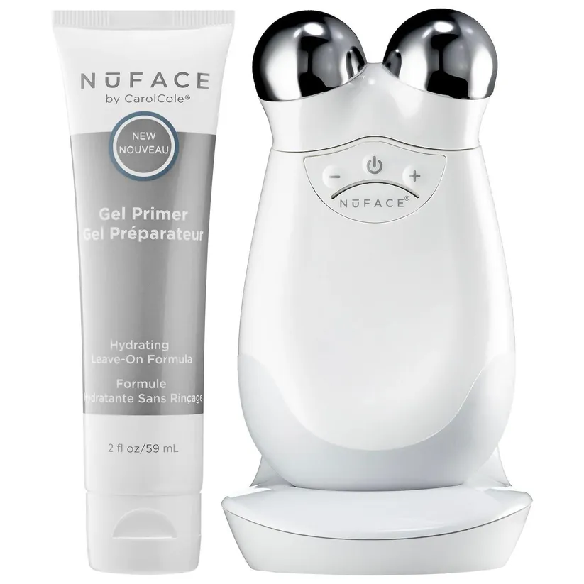

These Luxury Skin-Care Products Are Worth Every Penny
NOVEMBER 24TH
If you can make it work within your budget, luxury skin-care products are a great way to spend your money, in my opinion. Think about all the products you've bought because they came at a lower price tag—most of them are currently collecting dust in your bathroom, right? Spending money on cheap products that don't really work for you starts to add up over time.
The thing about the luxury skin-care products that we recommend below is that they actually work; they're powered by scientific research and use high-end ingredients to penetrate and repair your skin. The cost may feel a bit indulgent at first, but once you start to see tangible results, you'll realize the price is worth the reward. Plus, if you don't go overboard with the amount of product you're slathering on your face, you can extend its shelf life, so you really get your money's worth.
From active-ingredient-filled serums to hardworking creams and everything in between, ahead, you'll find the 12 best expensive skin-care products that our staffers use until the last drop..
| |
111skin
Y Theorem Repair Serum NAC Y2
$350
This do-it-all serum could probably replace all of the other products in your routine, thanks to its NAC Y2 complex. Originally used to help patients heal post-surgery, the formula infuses your skin with ingredients that soothe redness, calm inflammation, block environmental aggressors, and reduce the look of fine lines while also plumping the skin barrier. Told you, it puts in work. |
|  |
NUFACE
Trinity Facial Toning Device
$339
If you wake up with a puffy face in the AM (hello, me), this tool will become an arsenal in your morning skin-care routine. The power is in its microcurrent technology—the metal nodes at the top of the devices send electric currents through several layers of your skin, giving your muscles a nice jolt (don't worry—none of this is painful). Basically, the microcurrent revs up the production of collagen and elastin in your face—two proteins that keep your skin firm, flexible, and lifted. It takes a while to see results: The brand recommends using it five times a week for 60 days at first—but afterward, you'll notice a more defined jawline and cheekbones you didn't know you had |
| |
CHANEL
Vitalumiere Aqua Ultra-light Skin Perfecting Sunscreen Makeup Broad Spectrum SPF 15 Hybrid Fluid Foundation
$50
I am on my third bottle of this Chanel SPF Foundation and don't ever plan on phasing it out. As someone who admittedly tends to forget my daily SPF (I know, I'm sorry!), this hybrid product gives the peace of mind of SPF 15 protection. |
| |
ELEMIS
Dynamic Resurfacing Peel & Reset
$110
I really do love a two-in-one product, and this one from Elemis is the perfect marriage of a resurfacing peel and a deep-hydration serum, so basically, it's an all-in-one bottle. Phase one, the peel, works to shed layers of the skin and accelerate natural cell turnover while phase two works to soothe the skin with hydrating properties. Sometimes it can be tricky to pair up at-home peels with complementing serums, but this one takes all the guesswork out. |